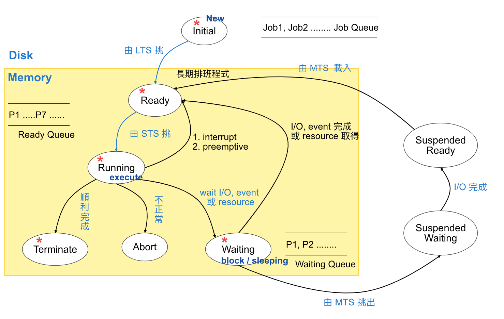
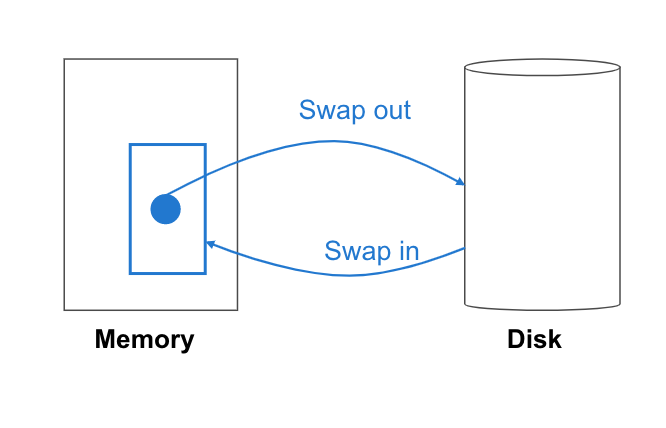
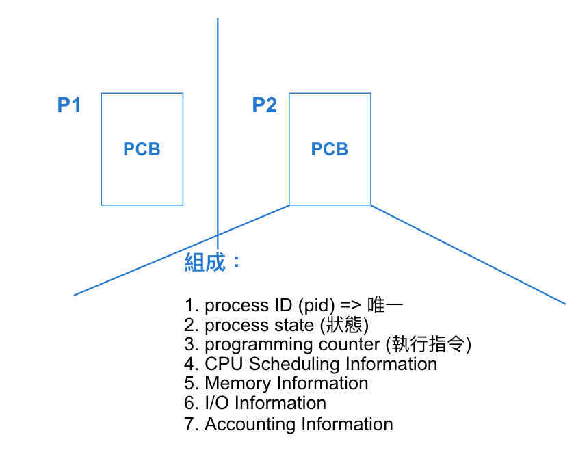
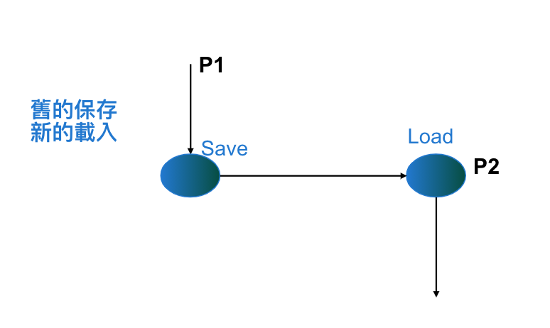

3.4 行程
目錄
- Process Definition
- Program vs Process
- Process STD
- PCB, context switching
- CPU Scheduling algorithm
- Thread 執行緒
Process Definition
執行中的程式 (即：程式碼 + 當前執行環境)
- 執行環境為：
- CPU register 暫存器
- Programming counter 程式計數器
- Stack
- Process state 狀態
- Data section
- Code section
Program and Process Compare
| Program | Process |
|---|---|
| Passive 被動 | Active 主動 |
| A field stored in the disk | 有 programming counter |
Process STD (State Transitive Diagram) 行程狀態轉換圖

Scheduler 種類
- LTS (Long Term Scheduler)
Def: 從 Job Queue 挑選 Job 進入 Memory 之中, 使其來到 Ready 的狀態
特色：- 執行頻率不高
- 可控制 Multiprogramming Degree (分支度) 大小
- 可挑 I/O 和 CPU bounded job 為一適當比例
- 批次常用, 分時, 即時少用
- STS (Short Term Scheduler)
Def: 從 Ready Queue 挑一 process, 使之獲得 CPU, 進入 Running 狀態
特色：- 執行頻率高
- 各系統皆使用 (因為每個系統皆有 CPU, 因此需要)
- MTS (Medium Term Scheduler)
Def: 當 Memory 不足時, 由 MTS 挑部分的 process 將之 swap out, 待日後 Memory 有空間時, 再將之 swap in
MTS 所挑選的部分為：1. priority 低的 process 2. waiting time 過長
圖：
PCB (Process Control Block)
Def: 為方便管理 process 的相關資訊, 故將之集合成一記錄區塊, 謂之 PCB
圖：
Context Switching (內文轉換)
Def: 當 process P1 需 wait I/O 時, 則 CPU 將切換給 P2, 此時需將 P1 的 PCB 保存, P2 的 PCB 載入
影響 context switching 效能大多為硬體的層次如：
- CPU register 數量
- Memory access speed
- 是否提供特殊指令
圖示：